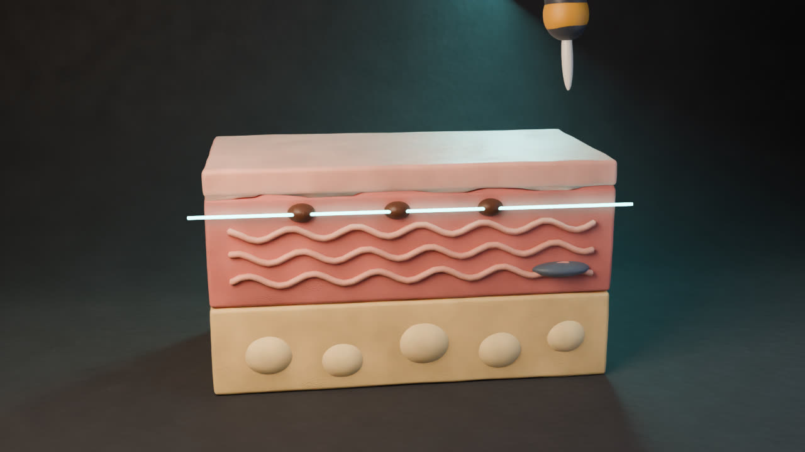
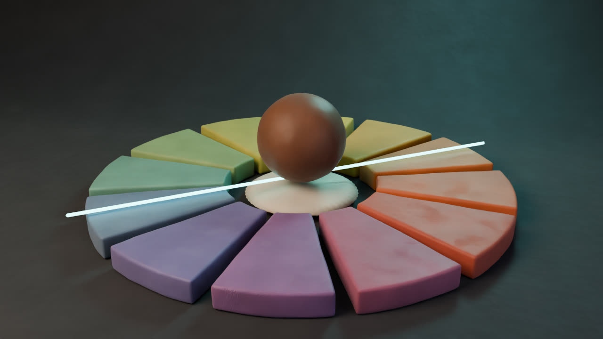

Un corte de piel, en plastilina
Así se ve la piel si la cortamos como un bloque de plastilina: tres capas con funciones muy distintas.
Ciencia del pigmento
Dos fundamentos que separan un resultado profesional de uno improvisado: dónde se deposita el pigmento y cómo se corrige su color. Esculpidos en plastilina digital en 3D para que se entiendan de un vistazo.

Desplázate para ver cada inserción · arrastra para girar · toca una gota
Así se ve la piel si la cortamos como un bloque de plastilina: tres capas con funciones muy distintas.
Arriba, la epidermis, que se renueva constantemente. En medio, la dermis, con colágeno; su unión con la epidermis (unión dermoepidérmica) es ondulada por las papilas dérmicas. Abajo, la hipodermis, tejido graso.
La línea cian marca la dermis superficial, justo bajo la unión con la epidermis. Ahí el pigmento no se pierde con la renovación de la epidermis y el trazo se ve definido. Como toda micropigmentación, se aclara con el tiempo y requiere retoques.
Una inserción excesiva deja el pigmento donde se expande y pierde definición. Además, la piel dispersa la luz (efecto Tyndall) y el pigmento profundo se percibe gris azulado. Es el error que la técnica precisa evita.
Controlar la profundidad depende de la mano, la aguja, la velocidad y la lectura de la piel. Se aprende con práctica guiada.
Conoce la formación
Desplázate para mezclar · arrastra para girar · toca una gota
Doce cuñas de plastilina con tonos minerales. Los colores enfrentados son complementarios.
El pigmento antiguo virado a gris azulado y el corrector anaranjado están en extremos opuestos del eje.
Al combinarse, cada uno neutraliza el exceso del otro. En plastilina lo mostramos como en el stop motion clásico: una pieza sustituye a las dos.
El resultado se acerca a un tono natural. La proporción exacta depende del pigmento previo y del subtono de la piel.
Leer la piel, elegir el modificador y prever cómo cicatriza el color son competencias que se forman paso a paso.
Conoce la formaciónUn bloque de plastilina muestra un corte de piel: epidermis rosada arriba, dermis con fibras de colágeno en medio e hipodermis con lóbulos de grasa abajo. Una línea cian marca la dermis superficial. Un dermógrafo baja tres veces y deposita tres gotas de pigmento marrón sobre la línea; cada gota se estira y se asienta. En la cuarta inserción la aguja baja demasiado: la gota queda más honda, se expande y se ve gris azulada.
Sobre un círculo cromático de doce cuñas de plastilina se enciende una línea cian entre el azul y el naranja. Una gota gris azulada y una gota naranja avanzan a saltitos por esa línea hasta encontrarse en el centro. Las dos desaparecen y en su lugar nace, con un pequeño rebote, una gota marrón neutra.
En la franja superficial de la dermis, justo por debajo de la unión con la epidermis. Si se queda en la epidermis se elimina con la renovación de la piel; si se deposita más hondo puede difuminarse y verse gris azulado.
Suele deberse a un pigmento implantado demasiado profundo o a la degradación de sus componentes cálidos con el tiempo. La piel dispersa la luz (efecto Tyndall) y el pigmento profundo se percibe más frío.
Con su complementario en el círculo cromático: un modificador anaranjado. Al combinarse, ambos tonos se atenúan y el resultado se acerca a un marrón natural. La proporción la valora un profesional formado en colorimetría; en algunos casos conviene aclarar o eliminar antes el pigmento previo.
Sí. La colorimetría aplicada (subtono de la piel, círculo cromático, modificadores y correcciones) es un pilar de la formación profesional del Instituto Nacional de Micropigmentación.
Contenido divulgativo. No sustituye la valoración de un profesional cualificado.
Formación profesional en micropigmentación con práctica guiada y colorimetría aplicada.